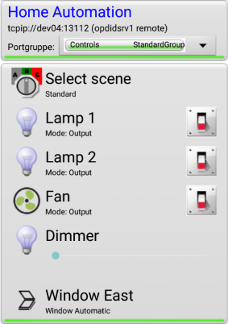

The purpose of this document is to give you some idea what OpenHAT is and what you can do with it.
OpenHAT is a system service (or "daemon" on Linux) that allows you to remote-control device functions, like switching lights on and off, opening and closing windows etc., both manually and automatically. It is typically used for home automation but can be used to control and automate other devices or processes as well. OpenHAT is designed to run efficiently on low-cost hardware such as the Raspberry Pi.
For communication with the outside world OpenHAT requires special drivers that perform the required I/O operations. These drivers must support the hardware platform you use. OpenHAT provides a plugin architecture that makes it easy to develop device drivers and also includes a number of drivers to get you started quickly (TODO link quickstart). Alternatively you can integrate command line tools with OpenHAT to control your devices.
While running, OpenHAT continuously processes a set of automation rules in a loop. The automation rules are defined in text files conforming to the INI file standard. You do not have to do any programming, instead you define your automation elements and how they interact with each other. This makes OpenHAT very easy to use for simple tasks while keeping the complexity manageable for more advanced requirements.
OpenHAT gives you access to the current state of the automation elements either via an Android or an HTML interface (GUI).

Example: Android client
Example: HTML GUI
You can control the system via the GUI by interacting with the displayed elements. In OpenHAT lingo, the elements are called "ports". There are five different basic types of ports which you can use to model the behavior of your automated system:
| Port type | Image (example) | Description |
| Digital Port | |
Models something that can be on or off (High or Low). |
| Analog Port | |
Models analog inputs or outputs of microcontrollers. |
| Dial Port | |
Models anything that has a numeric value. |
| Select Port | |
Represents a number of labeled choices to select from. |
| Streaming Port | no image available | Can be used to transfer text or binary data. |
These basic port types have no specific behavior on their own. They can be displayed on a GUI, and they can be changed by a user unless they are read-only. You can think of them as internal variables of the automated system.
GUIs provide ways to set the values of the ports. A Digital port can be changed by clicking on its "switch" icon. Analog and Dial ports can be changed by clicking on their sliders or via a dialog that can be called via a context menu. The Select port, when clicked, displays its items as a menu to choose from:

The only basic port types you will probably need are the Digital port, the Dial port, and the Select port.
Ports are the general building blocks that make up the automation model. There are many more built-in ports that extend the functionality of the basic ports, for example triggers, counters, timers, window controllers, and so on. These ports can be configured with numerous options. They are called "advanced ports".
Advanced ports have some additional behavior that make them useful for automation. You can basically distinguish two types of advanced ports: external ports that in some way interact with the environment (for example, read file content, execute OS commands, read or set I/O ports using some kind of driver etc.) and internal ports that connect other ports together. Internal ports are useful to model the automation logic; they perform calculations, change the state of other ports depending on certain conditions and so on. Examples are timers, numeric expressions, or specific ports like the window controller which uses quite a complex state machine internally but does not interact with the environment directly.
This separation of internal logic and external I/O access makes it easy to test your automation model. Instead of directly switching a port that is connected to a powerful motor you can test with an LED first. When the model works you can then change it to use the motor and be reasonably sure that nothing unexpected will happen.
It is important to understand that even though advanced ports do have additional functionality they can be used in places where their basic type is expected. For example, a function that expects a Digital port also works with a Timer port (a timer is modeled as a Digital port in OpenHAT because it can be on or off). You can also think about this in terms of inheritance, i. e. advanced ports inherit properties from their basic type. Every adanced port is derived from a basic port type, and if you want to use them properly it is important to know which one it is.
Internal ports that implement some kind of logic generally have inputs and/or outputs. Their meanings and functions depend on the type of port. Ports can be graphically visualized by rectangles, with circles as inputs and outputs. For example, this is a graphical representation of a Logic port:
The Logic port has a (virtually) unlimited number of inputs (I). All inputs must be connected to Digital ports. Other types of ports are not supported by the Logic port. The Logic port continually checks the states of all input ports and performs a logic function on them. For example, it can perform the "AND" function which defines that the outcome is High if all of the input ports are High. Other functions are OR, XOR, ATLEAST(n), ATMOST(n) and EXACT(n) with n being an integer number. The outcome of the logic function is then applied to all ports defined in the output list (O). There is also an inverted output list (/O) whose ports will be set to the exact opposite of the calculated outcome. All ports on either output and inverted output list must again be Digital ports (or advanced ports that are based on the Digital port).
Using such graphical blocks you can draw schematics that show how your automation model works. For example:
The meaning of this diagram is simple. In each iteration of the processing loop the Logic port will read the state of Digital Port 1 and apply the OR function (which in this case is the same as an identity function because there is only one input port). The inverse output will then be set to Digital Port 2. The effect of this configuration is that the state of Digital Port 2 will always be the exact opposite of Digital Port 1.
Consider this example:

This configuration will switch Digital Port 3 to High if at least one of the two input ports Digital Port 1 and Digital Port 2 is High. If both input ports are Low, Digital Port 3 will also be switched to Low.
Whether ports are "input" or "output" ports depends only on how they are used by other ports. Ports that are outputs of one port may well be inputs for other ports. This chaining of relatively simple components is what enables you to build more complex automation models in OpenHAT.
The Logic port is just one of the built-in advanced ports. There are many more, and you can implement your own ports using OpenHAT's plugin system. Here's a list of built-in ports:
The Logic port allows you to process the state of one or more Digital ports by applying a logic function (OR, AND, XOR, ATLEAST(n), ATMOST(n), EXACT(n) and their inversions). The result can be sent to other Digital ports.
A Pulse port is a Digital port that can generate periodic pulses with a defined period and duty cycle. Period and duty cycle can be determined from other ports' values at runtime. The output can be sent to Digital ports (inverted and non-inverted). Its maximum frequency depends on your system but in most cases would not exceed 100 Hz, so it's not really suitable for dimming lights or LEDs like a "real" PWM. It can be used for blinking lights (e. g. status indicators) or periodic actions that do not repeat very quickly.
A Selector port (being a Digital port) is a bridge between a Digital port and a specified Select port. If it is set to High it will set the Select port to a certain position. It will also be High if the Select port is in that position, and Low otherwise, which can be used to detect whether the Select port is in a certain position.
An Error Detector is a Digital Port that is High when at least one of a list of ports has an error. Ports may report an error for example if a value is unavailable or has expired. An automation model should be able to respond to port errors in a well-defined way.
A Fader port can fade Analog or Dial ports in or out. You can specify a number of options such as the fader mode (linear or exponential), the start and end values, and what should happen when the Fader port is switched off. The Fader port is itself a Digital port, and it will begin its fading operation at the moment its state is set to High.
A Scene Select port lets you select one of several pre-defined "scenes". A scene is just a specification of the states of some ports in the system. These can be defined in a configuration file that is being applied when the corresponding option is selected.
A File port is a Digital port which, while its Line is High, monitors the content of a specified file. If the file's content changes it is being read and the result is set to a certain specified "value port", possibly applying some transformations. If the value port is not read-only any changes in its value can also be written to the specified file.
The File port is an important port because it allows OpenHAT to receive input from its environment in a generic way, i. e. without the need for specialized drivers.
The Exec port is a Digital port which, when it is set to High, executes a predefined operating system command. Like a File port provides input to an OpenHAT instance, the Exec port allows OpenHAT to interact with the environment in a generic way; for example, send an email, execute scripts, or interact with proprietary hardware via command line tools. The Exec port can pass information about the current state of ports to the called program.
A Logger port can periodically write the current values of other OpenHAT ports to a log file.
An Aggregator port can collect data from a specified Dial port over time and perform some statistical calculations. The result of these calculations can be assigned to other Dial ports. The Aggregator port can also provide historical data which can be used by the UI to display a graph or other information. An example from the HTML GUI:

A Counter port is a Dial port whose value increments either linearly with time in specified intervals, or with events detected by a Trigger port.
A Trigger port can detect specified events on one or more Digital ports, for example, whether they are set to High or Low, or toggled. It can in turn set the state of specified output ports when this action occurs, or increment a specified Counter port. A Trigger port is itself a Digital port which operates only if its Line is High.
A Timer port is a Digital port that switches other Digital ports on or off according to one or more scheduled events. Events can be scheduled in different ways: once, in recurring intervals, periodically at predefined date/time patterns, astronomically (sunrise/sunset), or manually.
The Expression port (Digital) is a very versatile component that allows you to evaluate formulas or even small programs depending on the state of other ports, including value transformations, comparisons, and more complex formulas. Ports can be referred to in the formula by using their IDs as variable names. The result of the expression can be assigned to an output port. The Expression port uses the Exprtk library whose documentation can be found here: http://www.partow.net/programming/exprtk/
Plugins can provide additional functionality via specialized ports. Ports are realized in plugins when their functionality becomes more voluminous or when it is unlikely that they are useful for all OpenHAT users, or when they implement some platform-specific functionality such as accessing I/O pins.
The Window plugin can control electric windows and shutters in a (relatively) hardware-independent way. The Window port is modeled as a Select port with at least three positions: Off, Closed, and Open. can operate in two modes: H-bridge mode and serial relay mode, depending on the electrical requirements and configuration of the window actuator. There are a variety of configuration options, e. g.: optional enable lines for power supplies, activation delays, optional close switch support, lines to force close or force open, different automation options etc.
The Weather plugin implements support for the WeeWX weather software (http://weewx.com). WeeWX is a free, open source Python software that understands the protocol of many commercial weather stations. If you need to integrate weather data into your home automation this is definitely worth a try.
The FRITZ!Box plugin implements support for the Smart Home devices made by German company AVM (http://www.avm.de). It supports reading and controlling the FRITZDECT!200 radio-controlled power socket/energy meter.
The Webserver plugin provides the HTML GUI shown in the above screenshot. This HTML GUI is heavily based on JavaScript but can be modified or extended to your needs.
A Gertboard is an I/O board for the Raspberry Pi (for more information see https://www.element14.com/community/docs/DOC-51726. The Gertboard plugin is a Raspberry Pi-specific plugin that directly accesses Raspberry Pi and Gertboard I/O hardware and provides port expansion by using the built-in ATMEGA microcontroller. It supports pushbuttons, reading/writing I/O pins, and the Gertboard's A/D and D/A converters.
The RemoteSwitch plugin is a Raspberry Pi-specific plugin that theoretically supports 433 MHz radio transmitters in order to control power sockets and other devices. It is currently not fully tested and probably doesn't work.
The following is an example for a more complex automation model.
Suppose you have a room with window, and a weather station that tells you inside and outside temperature. From time to time you want to let fresh air into your room. Aerating the room should be done automatically, with the following conditions:
The overall goal is to provide the user with a maximum amount of information and control over state and behavior of the model.
Modeling this behavior with traditional imperative programming is challenging because it requires keeping track of previous states and comparing them to current states. It will probably be hard to debug and not very extensible in case of future changes in requirements. OpenHAT, on the other hand, forces you to model all system states explicitly. This might seem a bit more effort at first but makes the model easy to understand and extend.
Let's start by defining our temperature input. They are represented as numeric values. For the sake of simplicity, let's assume we're measuring temperature in whole degrees Celsius. We also define a standard Dial port which represents our temperature threshold that can be set via a user interface. (For now we're just simulating these ports but later on we could connect a weather station or provide other input sources.)
Expression ports give us the ability to perform calculations on other values. In this case we need two comparisons to tell us 1) whether it's warmer outside and 2) whether it's too cold outside. We will send the outputs of these comparisons to two internal Digital ports.
If we run this model and view it on the HTML GUI, we will observe the following:
You can see the model definition here. This model has the following properties:
To integrate this simple model with a Window port we have to know something about the automation behavior of a Window port. A Window port can be in four different modes: Off, Closed, Open, and Automatic. The Window port is modeled as a Select port so these states correspond with its selection items. If a Window port is in Automatic mode it can be opened by setting one of its AutoOpen input ports to High. There is a corresponding input called AutoClose but we're going to use an alternative input called ForceClose which will also work if the Window port is not set to Automatic. Remember, we want to make sure that the window is closed whenever the temperature conditions apply, even if we have manually opened it. Additionally, we tell the window to go to Automatic mode once it's been fully opened or closed.
OK. We will use TooWarmOutside and TooColdOutside to ForceClose the Window. But the window won't open automatically if the ForceClose line is set Low. It requires a High on AutoOpen as an initiating signal. Now a naive solution would be to simply invert the two ports (using a Logic port, see above) and connect it to the AutoOpen input. But the effect of this would be that the window always opens whenever the temperature conditions are right... even if we don't currently want to aerate.
The solution is to open the window only when one of the locking conditions ceases to be active. For this we can use a Trigger port that sets its outputs to High when one of the ports TooWarmOutside and TooColdOutside changes its state from High to Low. We'll use another Digital port called "OpenWindow" as the target for the Trigger port. To ensure that the condition does not remain active for an indefinite time we will also employ a PulsePort to reset OpenWindow back to Low after one second. As a special trick the Pulse ports switches itself off at the same time to avoid cycling repeatedly.
The resulting HTML GUI would look like this:If you are testing this model, try switching Window to Open. The WindowMotorOpen should become active for five seconds. Window will then switch off the WindowMotorOpen port and set itself to Automatic. If you now change OutsideTemp to maybe 14 °C you should see that TooColdOutside becomes High. At the same time, Window will switch on the WindowMotorClose port for five seconds because its ForceClose input has been activated. If you now change OutsideTemp back to something higher you should see that TooColdOutside becomes Low. ResetPulse and OpenWindow should become High for one second. As Window's ForceClose ports are now all Low and OpenWindow gives the signal to open the window, WindowMotorOpen should now become active for five seconds again.
Now disable Trigger and set OutsideTemp lower again. WindowMotorClose should be activated. If you now change OutsideTemp back the window does not automatically open again because Trigger is not active.
This model satisfies all of our conditions and is quite powerful:
This example also demonstrates how you can start building automation models with OpenHAT. You start out with a few elements and extend and test your model, possibly using a few dummy ports. If everything works you can replace your dummy ports with ports connected to the outside world and hopefully everything will work fine. You can then tune your GUI to hide the less important ports from the user's view.
Don't be intimidated by the complexity of this model, however. Most home automation tasks are much simpler. If you have acquired a good understanding of the OpenHAT ports and their capabilities you will also be able to design models like this. In the mean time, the next step is to read the Quickstart document or have a look at the port documentation.